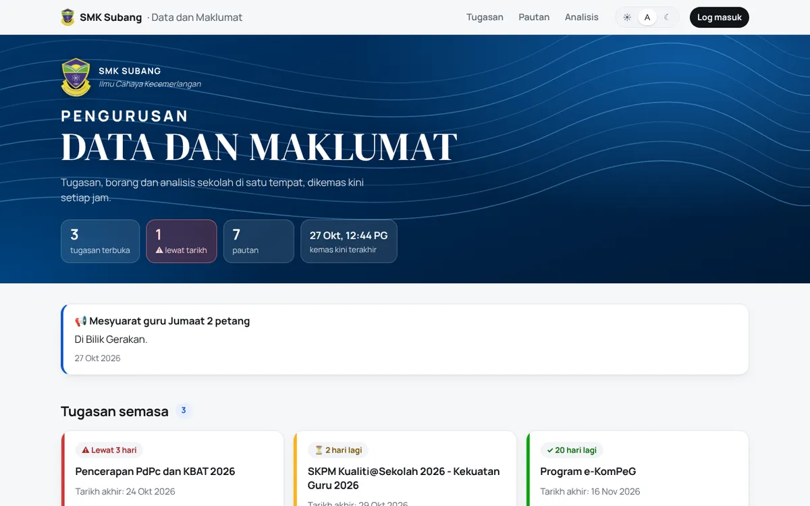
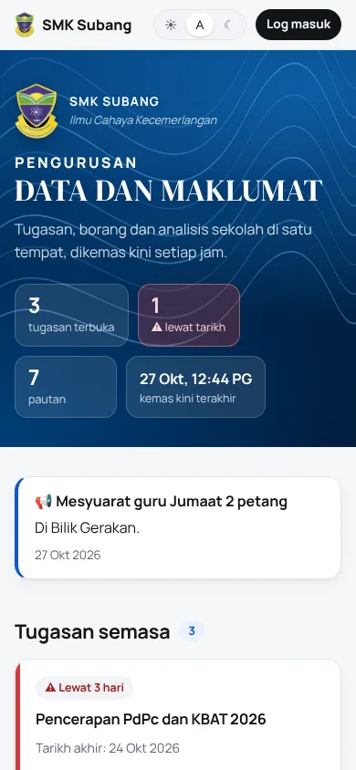

SMK Subang data dashboard
The data hub of a real secondary school in Selangor, in use today.
Replaced a page of seven links and one messy spreadsheet that ~150 teachers had to dig through.
- Who hasn't submitted, with a one-tap list to copy into WhatsApp
- Syncs every hour from the Google Sheets staff already edit, and flags bad data by sheet and row
- Private by design: public page shows totals only, row-level security, append-only audit log
- No shared passwords: new admins get a one-time link through Telegram